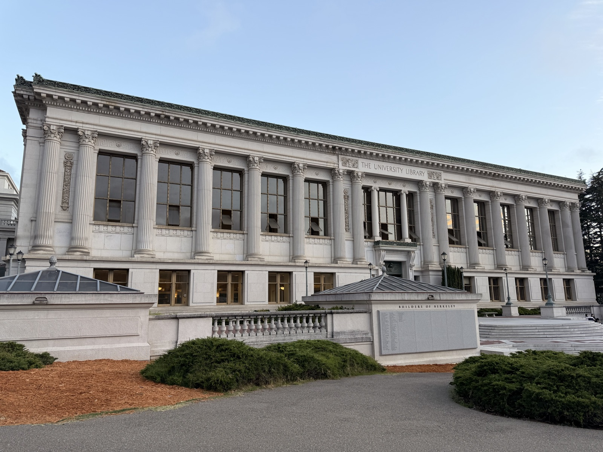
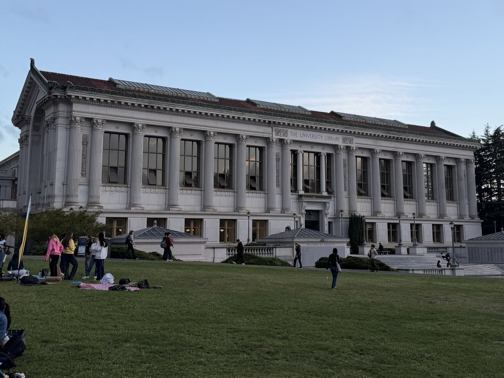
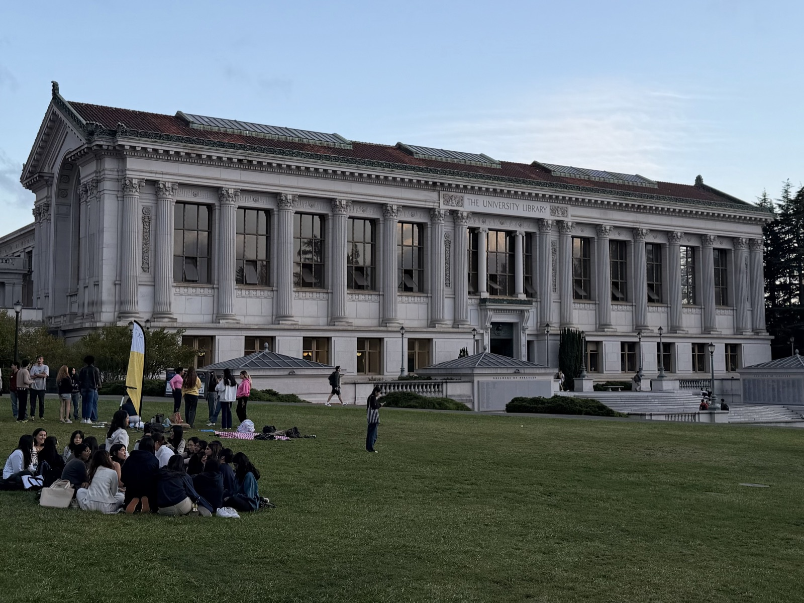
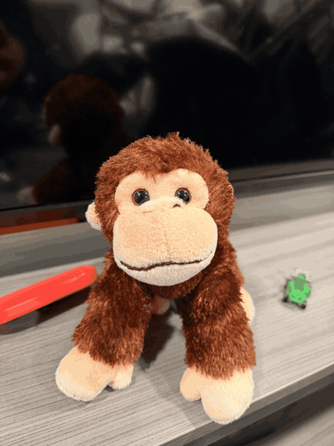

One-line summary of what this project does.
Describe how the distance to the camera changes the apparent proportions of the face.
Describe what changes between the zoomed-in shot and the walked-up shot of Doe Library.



Describe the setup: how far you moved and how you adjusted zoom to keep the subject the same size.
